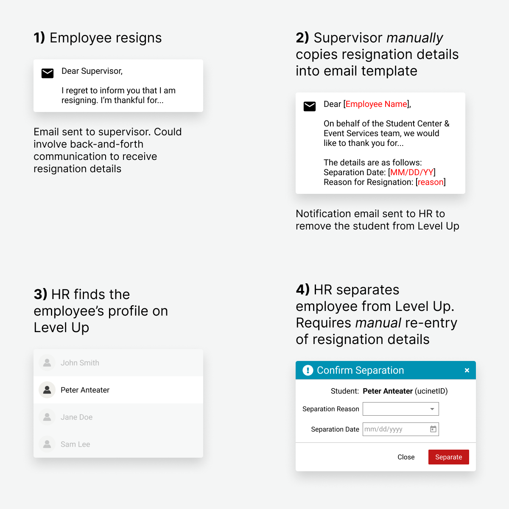
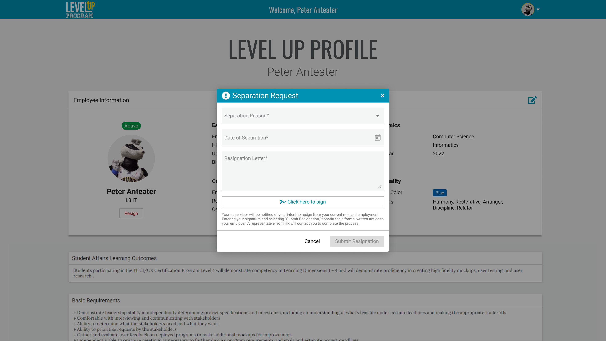
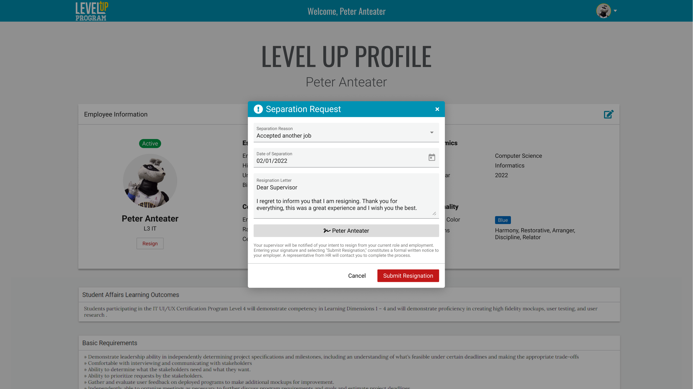
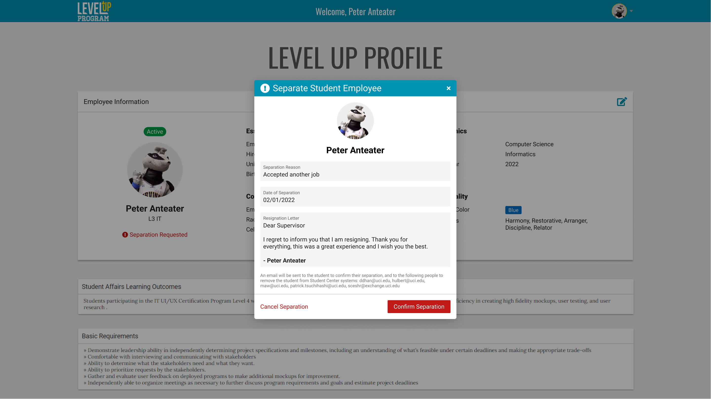
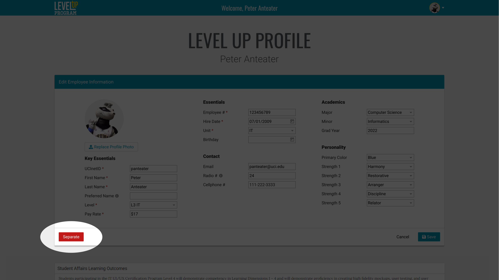
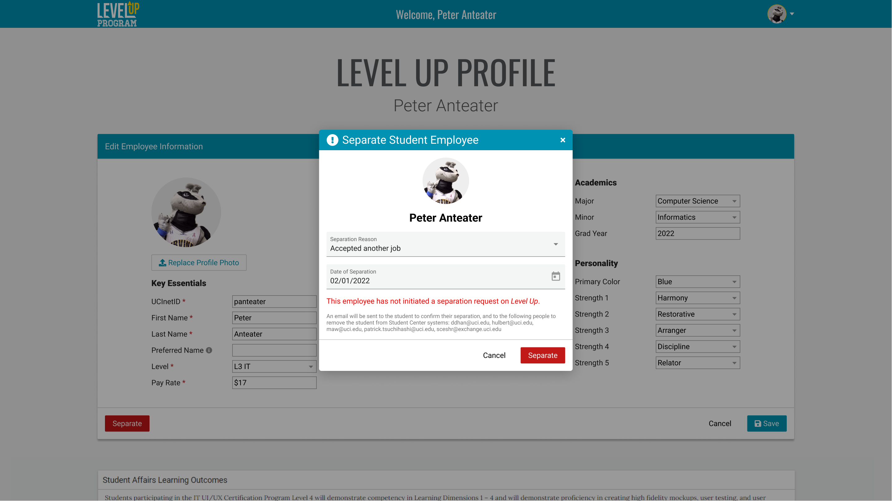

Level Up is an internal tool where UC Irvine Student Center Supervisors can manage student employees and track their training activities. The Student Center has over 100 student employees spanning across multiple departments that cycle. The process of separating an employee from Level Up was burdensome and time-consuming. I created a new user flow that allows department supervisors to formally separate students more efficiently.
When an employee resigns, their supervisor has to manually copy details from the student's resignation letter into an email template, including their separation date and reason for resignation. Then, HR has to remove the student from Level Up and manually re-enter those resignation details. Human Resources is the only department that can separate employees in Level Up. However, they think that supervisors should have the authority to separate their own students from their departments.

If the separation process is initiated in Level Up rather than an external method (email), then the resignation details will be kept in Level Up and wouldn't require re-entry. High fidelity mockups of a new user flow were created in Figma and shared in stakeholder meetings with HR and supervisors. These were iterated upon until approved for development.
Employee Resigns on Level Up
If a student needs to resign, this process isn't initiated via email anymore. Instead, they do so on level up so that their details are recorded on the system.
Separation Request Modal (Unfilled)

Separation Request Modal (Filled)

Supervisor Confirms Separation
The employee's supervisor would get an email with a link directly to their profile and a prompt to confirm the separation. Details are already listed and don't require manual re-entry, all that's needed is a click for approval on the Level Up system itself.

For a scenario where an employee needs to be terminated without their resignation, the supervisor would go to that employee's profile, and then initiate the separation themselves.


No action is required from HR anymore, but of course, they would be notified of an employee's separation via email.